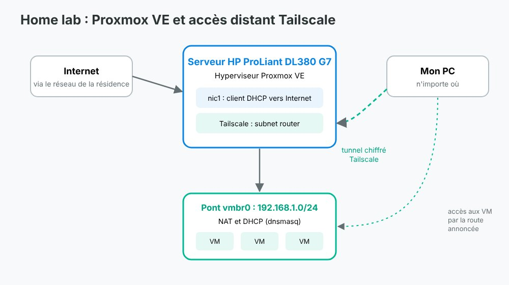

Projet n°11 : Home lab Proxmox VE avec accès distant Tailscale
Contexte :
Projet personnel : je dispose d'un serveur HP ProLiant DL380 G7 (64 Go de RAM) que j'utilise pour m'entraîner à l'administration système et réseau.
Objectif :
Héberger des machines virtuelles et pouvoir les administrer à distance de façon sécurisée, depuis un réseau de résidence étudiante qui impose une authentification par portail captif.

Architecture de mon home lab
Travaux :
Installation de l'hyperviseur Proxmox VE
Configuration réseau : un pont vmbr0 privé pour les VM et une interface en client DHCP vers Internet
Authentification du serveur sur le portail captif depuis mon PC, à travers un tunnel SSH
Installation de Tailscale en subnet router pour accéder au serveur et aux VM de n'importe où, par un tunnel chiffré
NAT et DHCP (dnsmasq) pour que les VM accèdent à Internet sans configuration manuelle
Rédaction d'une fiche technique avec toutes les commandes pour pouvoir tout reconfigurer